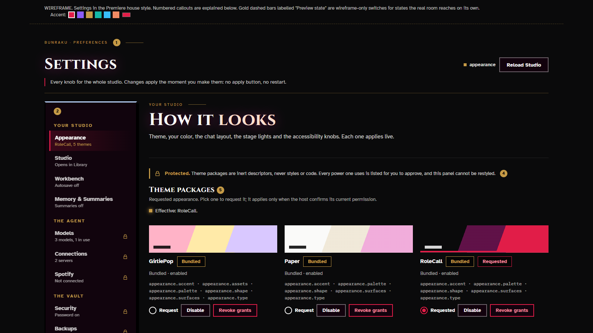
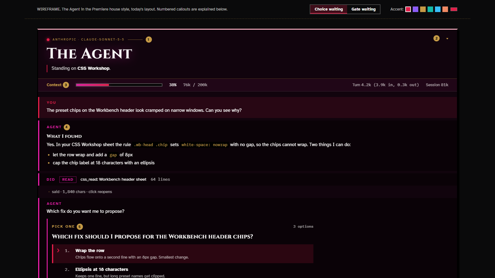

Every room, Premiere
One header, one panel, one button family, all colored from your accent. Same rooms, same places. Pick an accent in the strip above to see every page follow it.

Settings
New layout (the one room that needed it): twelve tabs in four acts, every row kept, Stage lights added.

The Agent
Today's single column. Bands, choice card, Gate and composer restyled.